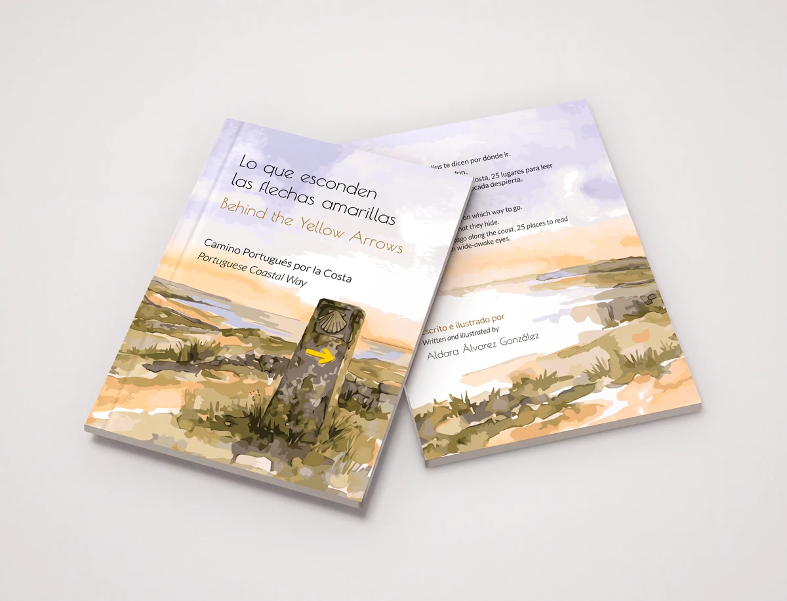

INDESIGN
PROCREATE
ILLUSTRATOR

The book’s official website
flechasamarillas.aldaraalvarez.esDiscover the book and reserve your copy.
EDITORIAL DESIGN
AND ILLUSTRATION PROJECT
FLECHAS AMARILLAS
Self-conceived, self-created bilingual pocket book (Spanish and English) in A6 format.
Designed in InDesign.
Self-written texts in Spanish and English.
Layout designed in InDesign with the Poiret One and Lato Light typefaces.
Self-created illustrations for the cover and interior of the book.
Created in Procreate and vectorized in Illustrator.

EDITORIAL DESIGN
AND ILLUSTRATION PROJECT
FLECHAS AMARILLAS
Self-conceived, self-created bilingual pocket book (Spanish and English) in A6 format.
Designed in InDesign.
Self-written texts in Spanish and English.
Layout designed in InDesign with the Poiret One and Lato Light typefaces.
Self-created illustrations for the cover and interior of the book.
Created in Procreate and vectorized in Illustrator.
DO YOU HAVE A PROJECT IN MIND?
LET'S TALK!
SEND MESSAGEIt is always a pleasure to connect with new projects and people.
Flechas Amarillas is an editorial design and illustration project consisting of the complete creation of Behind the Yellow Arrows, a bilingual A6 pocket book about the Portuguese Coastal Way, from Porto to Santiago de Compostela. The work ranges from writing the texts and creating the illustrations to the full layout of the volume, defining the cover, back cover and spine structure and the division of the route into four acts under a single conceptual line: a yellow arrow hidden in every illustration.